bird_03
| 條件 | 原圖 | v14 受約束 (tau_acut 0.04) | v14r 放寬 (tau_acut 0.16) | 殘差 · v14 受約束 (tau_acut 0.04) | 殘差 · v14r 放寬 (tau_acut 0.16) |
|---|---|---|---|---|---|
| N1 |  | 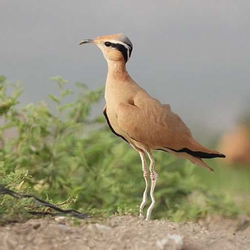 | 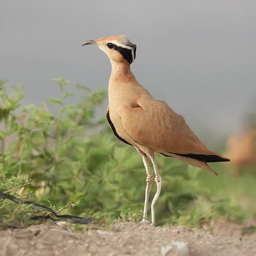 | 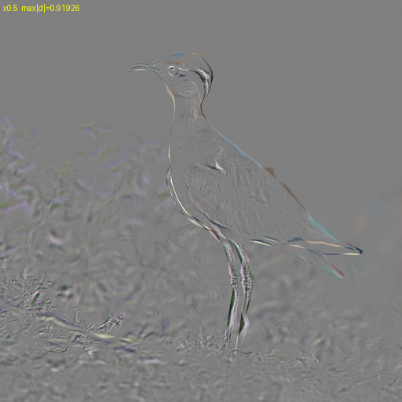 | 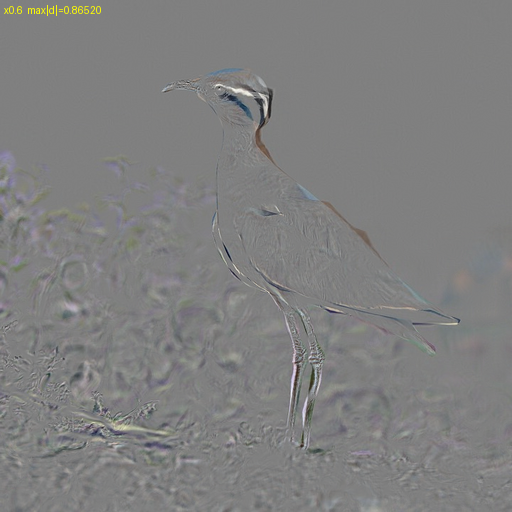 |
| v14 受約束 (tau_acut 0.04)：達成 τ 0.1997 · 縮放 k 3.125 · PSNR 24.79 · SSIM 0.7987 · DISTS 0.0897 · L∞ 0.919 · 位移max px 9.11 v14r 放寬 (tau_acut 0.16)：達成 τ 0.1964 · 縮放 k 1.125 · PSNR 24.76 · SSIM 0.8088 · DISTS 0.0958 · L∞ 0.865 · 位移max px 11.31 | |||||
| N2 |  | 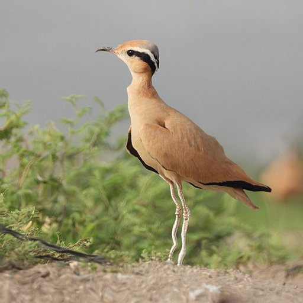 | 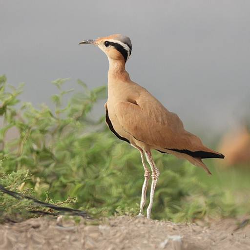 | 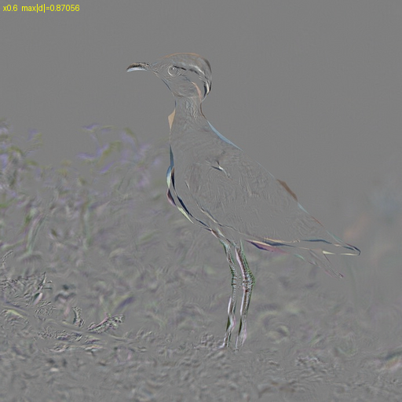 | 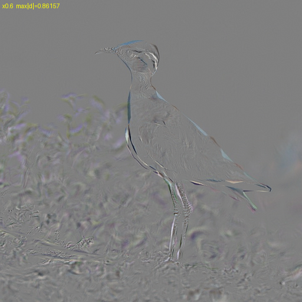 |
| v14 受約束 (tau_acut 0.04)：達成 τ 0.1970 · 縮放 k 2.500 · PSNR 25.37 · SSIM 0.8181 · DISTS 0.0840 · L∞ 0.871 · 位移max px 10.87 v14r 放寬 (tau_acut 0.16)：達成 τ 0.2006 · 縮放 k 1.094 · PSNR 25.94 · SSIM 0.8226 · DISTS 0.0924 · L∞ 0.862 · 位移max px 11.31 | |||||
| N3 |  | 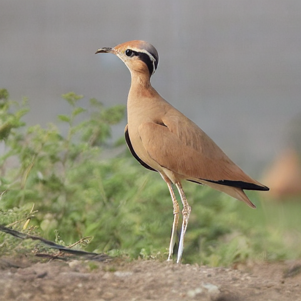 | 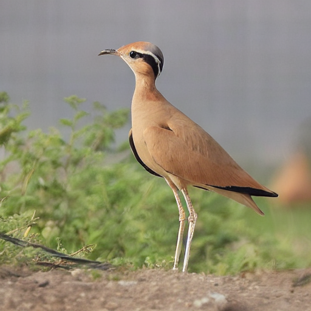 | 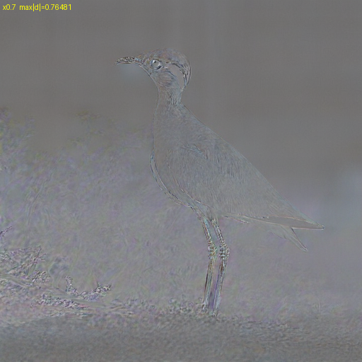 | 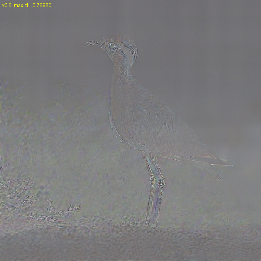 |
| v14 受約束 (tau_acut 0.04)：達成 τ 0.1968 · 縮放 k 6.500 · PSNR 22.91 · SSIM 0.9034 · DISTS 0.0678 · L∞ 0.765 · 位移max px — v14r 放寬 (tau_acut 0.16)：達成 τ 0.1977 · 縮放 k 1.125 · PSNR 24.08 · SSIM 0.9107 · DISTS 0.0708 · L∞ 0.770 · 位移max px — | |||||
| R |  |  | 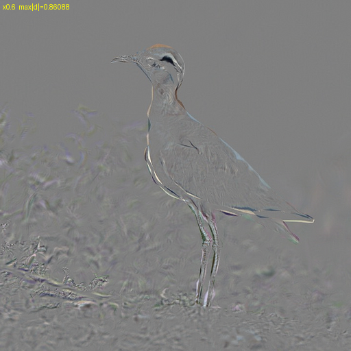 |  | |
| v14 受約束 (tau_acut 0.04)：達成 τ 0.1954 · 縮放 k 6.000 · PSNR 25.30 · SSIM 0.8319 · DISTS 0.0863 · L∞ 0.861 · 位移max px 9.96 v14r 放寬 (tau_acut 0.16)：達成 τ 0.1954 · 縮放 k 6.000 · PSNR 25.30 · SSIM 0.8319 · DISTS 0.0863 · L∞ 0.861 · 位移max px 9.96 | |||||
| photoguard_c |  | 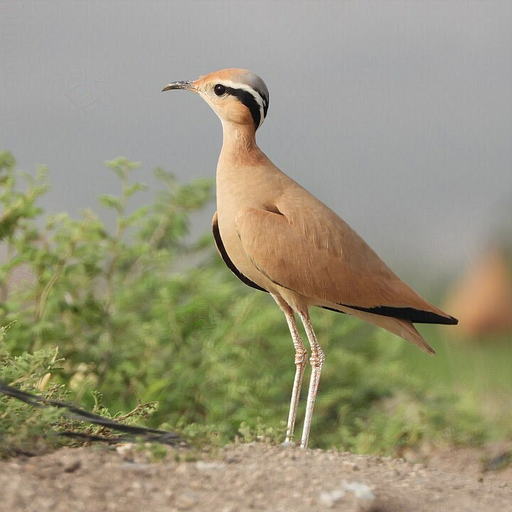 | 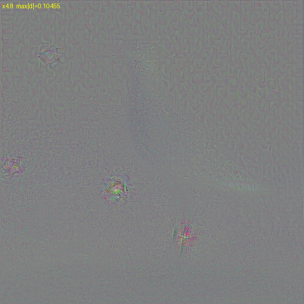 | 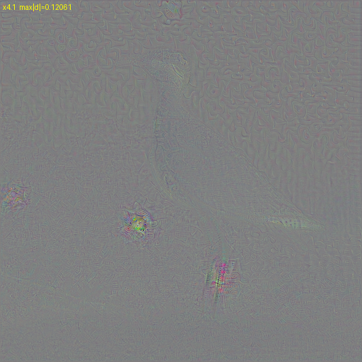 | |
| v14 受約束 (tau_acut 0.04)：達成 τ 0.2015 · 縮放 k 0.469 · PSNR 47.47 · SSIM 0.9962 · DISTS 0.0160 · L∞ 0.105 · 位移max px — v14r 放寬 (tau_acut 0.16)：達成 τ 0.1953 · 縮放 k 0.500 · PSNR 46.91 · SSIM 0.9957 · DISTS 0.0175 · L∞ 0.121 · 位移max px — | |||||